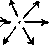
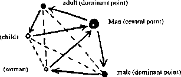
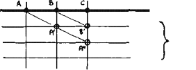

Translator’s Foreword Anti-Oedipus, trans. Robert Hurley, Mark Seem, and Helen R. Lane (Minneapolis: University of Minnesota Press, 1983).
La Revolution moleculaire, p. 144. The disintegration of the Left into dogmatic “groupuscules” and the amoeba-like proliferation of Lacanian schools based on personality cults confirmed the charge of bureaucratism but belied the potency of the mix. Guattari himself began his political life in the early 1950s with stormy attempts at membership in two Trotskyist splinter parties (Psychanalyse et transversalite,
Difference et repetition, pp. 49-55, 337-349. Introduction: Rhizome
opposed t segment  The Diaries of Franz Kafka, ed. Max Brod, trans. Joseph Kresh (New York: Schocken, 1948), p. 12. 2.1914: One or Several Wolves? 3.10,000 B.C.: The Geology of Morals L ‘individu, pp. 16-20, 124-131, and passim. 4. November 20,1923: Postulates of Linguistics Crowds and Power. Enantio- is from the Greek, “to oppose.”] 5. 587 B.C.-A.D. 70: On Several Regimes of Signs La linguistique. Guide alphab’etique (Paris: Danoel, 1969), pp. 331-333. November 28,1947: How to Make Yourself a Body without Organs 532 □ NOTES TO PP. 153-170 Burroughs, Naked Lunch, p. 8. [TRANS: Jouissance: “pleasure, enjoyment, orgasm.” In Lacanian psychoanalysis, the object of desire is irrevocably lost and the subject eternally split. Jouissanceis doubly impossible: life is a manque-a-jouir, read as “lack of enjoyment,” because the true object of desire is unattainable; and it is a manque-a-jouir, read as “a lack to be enjoyed,” because jouissance as the orgasmic plenitude of union with a substitute object means the annulment of the constitutionally split subject. One of the necessary terms, the subject or the object, is always missing.] Ibid. Robert Van Gulik, Sexual Life in Ancient China (Leiden: Brill, 1961); and Jean-Francois Lyotard’s discussion of it, Economie libidinale (Paris: Minuit, 1974), pp. 241 -251. Artaud, H’eliogabale, in Oeuvres Completes (Paris: Gallimard), pp. 50-51. It is true that Artaud still presents the identity of the One and the Multiple as a dialectical unity, one that reduces the multiple by gathering it into the One. He makes Heliogabalus a kind of Hegelian. But that is a manner of speaking, for from the beginning multiplicity surpasses all opposition and does away with dialectical movement. vol. 2, no. 3 (1977), p. 59.] [TRANS: Carlos Castaneda, Tales of Power (New York: Simon and Schuster, 1974), p. 125.] [TRANS: Ibid., p. 161.] 7. Year Zero: Faciality [TRANS: “Blumfeld. An Elderly Gentleman.” The Complete Stories of Franz Kafka, ed. Nahum N. Glazer (New York: Schocken, 1983), pp. 183-205.] See Otto Isakower, “Contribution a la psychopathologie des phenomenes associes a I’endormissement,” Nouvelle revue de psychanalyse, no. 5 (Spring 1972), pp. 197-210; Bertram D. Lewin, “Le sommeil, la bouche et l’ecran du reve,” ibid., pp. 211-224; and Rene 8.1874: Three Novellas, or “What Happened?” 9.1933: Micropolitics and Segmentarity 10.1730: Becoming-Intense, Becoming-Animal, Becoming-Imperceptible A nton Reiser (extracts) in La legende dispers’ee. A nthologie du romantisme allemand Problemes de la guerre en Grece ancienne, pp. 15-16. The Diary of Virginia Woolf, ed. Anne Olivier Bell (London: Hogarth Press, 1980), vol. 3, p. 209: “The idea has come to me that what I want now to do is to saturate every atom.” On all of these points, we make use of an unpublished study on Virginia Woolf by Fanny Zavin.  A «… -_« B
The Diary of Virginia Woolf, vol. 3, p. 236 (Wednesday, November 28, 1928). The same thing applies to the works of Kafka, in which childhood blocks function as the opposite of childhood memories. Proust’s case is more complicated because he performs a mixture of the two. The situation of the psychoanalyst is to grasp memories or phantasies, but never childhood blocks.  11.1837: Of the Refrain 12.1227: Treatise on Nomadology — the War Machine [Apercu historique sur I’origine et le developpement de methodes en geometrie… (Brussels: 13. 7000 B.C.: Apparatus of Capture Grundrisse, trans. Martin Nicolaus (New York: Vintage, 1973), pp. 471-514; Karl Wittfogel, Oriental Despotism Le despotisme oriental Essays on the Asiatic Mode of Production Sur le mode de production asiatique Langages totalitaires (Paris: Hermann, 1972), pp. 664-676. Faye shows that Nazism is indeed a totalitarianism, precisely because of its minimal State, its refusal of any statification of the economy, its reduction of wages, its hostility toward large-scale public works. But at the same time, he shows that Nazism carries out the creation of domestic capital, strategic construction, and the building of an arms industry, which makes it rival or sometimes even meld with an economy of socialist leaning (“something that seems to a ., D development, but as a revolutionary process.” Ouvriers et capital, (Crisi dello Stato-plano 14.1440: The Smooth and the Striated Philosophie de I’algebre (Paris: PUF, 1962), pp. 409ff. Regard, parole, espace, pp. 203ff., 239ff. Bibliography